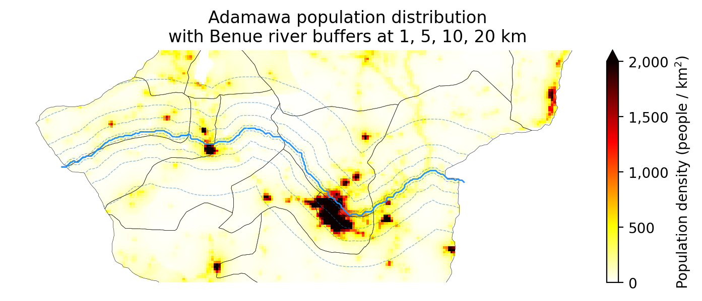

Code
%load_ext jupyter_black
%load_ext autoreload
%autoreload 2Calculating population within buffers of Benue
%load_ext jupyter_black
%load_ext autoreload
%autoreload 2import ocha_stratus as stratus
import matplotlib.pyplot as plt
import matplotlib.ticker as mticker
import numpy as np
import xarray as xr
import pandas as pd
import geopandas as gpd
from rioxarray.exceptions import NoDataInBounds
from src.datasources import codab, hydrosheds, worldpop
from src.utils.raster import compute_density_from_grid
from src.constants import *gdf_benue = hydrosheds.load_benue_aoi()adm2 = codab.load_codab_from_blob(admin_level=2, aoi_only=True)
adm2 = adm2[adm2["ADM1_PCODE"] == ADAMAWA]da_wp = worldpop.load_raw_worldpop()
da_wp.attrs["_FillValue"] = np.nanda_wp_adm = da_wp.rio.clip(adm2.geometry)dicts = []
for buffer_km in [1, 5, 10, 20]:
gdf_benue_buffer = (
gdf_benue.to_crs(3857).buffer(buffer_km * 1000).to_crs(4326)
)
da_buffer = da_wp.rio.clip(gdf_benue_buffer.geometry)
for pcode, row in adm2.set_index("ADM2_PCODE").iterrows():
try:
da_clip = da_buffer.rio.clip([row.geometry])
except NoDataInBounds:
continue
pop = int(da_clip.sum())
if pop < 1:
continue
dicts.append(
{
"ADM2_PCODE": pcode,
"ADM2_EN": row["ADM2_EN"],
"buffer_km": buffer_km,
"pop": pop,
}
)
df_exp = pd.DataFrame(dicts)
df_exp = df_exp.pivot(
index=["ADM2_PCODE", "ADM2_EN"], columns="buffer_km", values="pop"
)
df_exp.columns = [f"pop_{int(x)}km_buffer" for x in df_exp.columns]
df_exp = df_exp.reset_index()
df_exp = df_exp.fillna(0)
df_exp = df_exp.astype(int, errors="ignore")df_exp.sum(numeric_only=True)pop_1km_buffer 113813
pop_5km_buffer 621174
pop_10km_buffer 1090737
pop_20km_buffer 1396505
dtype: int64df_exp| ADM2_PCODE | ADM2_EN | pop_1km_buffer | pop_5km_buffer | pop_10km_buffer | pop_20km_buffer | |
|---|---|---|---|---|---|---|
| 0 | NG002001 | Demsa | 6369 | 33914 | 51665 | 73447 |
| 1 | NG002002 | Fufore | 22343 | 77203 | 145192 | 223624 |
| 2 | NG002005 | Girei | 56479 | 125612 | 164914 | 208615 |
| 3 | NG002006 | Guyuk | 0 | 0 | 0 | 8896 |
| 4 | NG002009 | Lamurde | 10324 | 36409 | 73197 | 108555 |
| 5 | NG002016 | Numan | 15766 | 88531 | 110746 | 130581 |
| 6 | NG002017 | Shelleng | 0 | 0 | 0 | 26733 |
| 7 | NG002018 | Song | 0 | 0 | 91 | 6027 |
| 8 | NG002020 | Yola North | 2195 | 144863 | 234307 | 234307 |
| 9 | NG002021 | Yola South | 337 | 114642 | 310625 | 375720 |
blob_name = f"{PROJECT_PREFIX}/processed/adamawa_benue_buffer_pop.csv"
stratus.upload_csv_to_blob(df_exp, blob_name)da_density = compute_density_from_grid(da_wp_adm, lat_name="y", lon_name="x")fig, ax = plt.subplots(dpi=200, figsize=(10, 3))
mappable = da_density.plot(
cmap="hot_r", ax=ax, add_colorbar=False, vmin=0, vmax=2000
)
cbar = fig.colorbar(mappable, ax=ax, fraction=0.02, pad=-0.1, extend="max")
cbar.ax.yaxis.set_major_formatter(
mticker.FuncFormatter(lambda x, _: f"{int(x):,}")
)
cbar.set_label("Population density (people / km$^2$)")
adm2.boundary.plot(linewidth=0.2, color="k", ax=ax)
gdf_benue.plot(linewidth=1, color="dodgerblue", ax=ax)
adm2_union = adm2.union_all()
buffer_kms = [1, 5, 10, 20]
for buffer_km in buffer_kms:
# Create merged buffer around Benue
buffer_geom = gdf_benue.to_crs(3857).buffer(buffer_km * 1000).union_all()
buffer_geom = (
gpd.GeoSeries([buffer_geom], crs=3857).to_crs(4326).union_all()
)
# Get the boundary line
buffer_boundary = buffer_geom.boundary
# Clip the boundary to only the part that intersects ADM2
clipped_boundary = buffer_boundary.intersection(adm2_union)
# Plot (only if not empty)
if not clipped_boundary.is_empty:
gpd.GeoSeries([clipped_boundary], crs=4326).plot(
ax=ax, linewidth=0.5, linestyle="--", alpha=0.5
)
ax.axis("off")
ax.set_ylim(top=9.8, bottom=9)
ax.set_title(
"Adamawa population distribution\n"
"with Benue river buffers at "
f"{', '.join([str(x) for x in buffer_kms])} km"
)Text(0.5, 1.0, 'Adamawa population distribution\nwith Benue river buffers at 1, 5, 10, 20 km')
float(da_density.mean()) * 370004607817.149539094float(da_wp_adm.sum())4704834.0